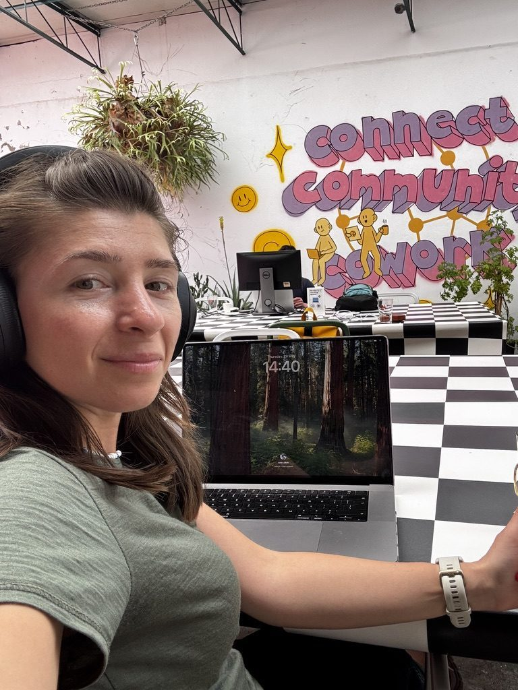
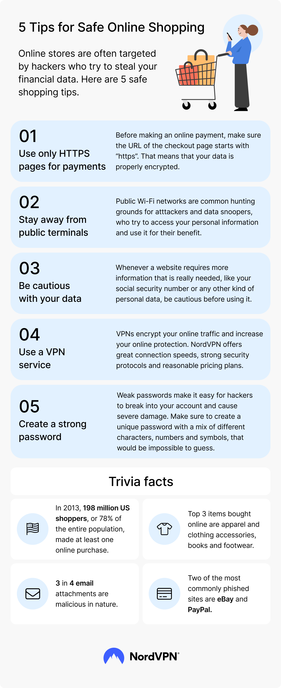
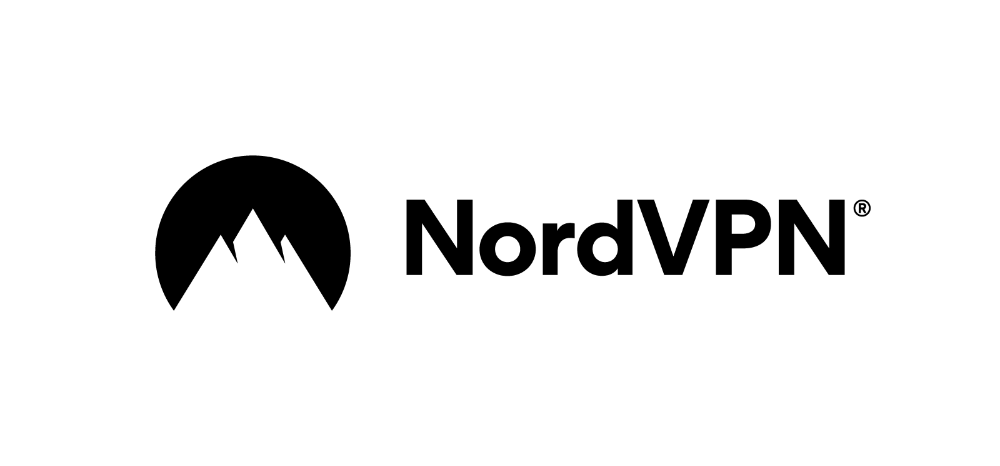

For years I thought of a VPN as something other people used — IT departments, people who were very online, people with opinions about routers. Then I started working from a different country every few weeks, and within about a month I'd run into all three of the problems a VPN actually solves.
My banking app locked me out because I "logged in from an unusual location." A streaming subscription I'd been paying for at home suddenly told me it wasn't available "in your region" — my own region, the one I pay taxes in. And I was doing all of this from cafe and co-working wifi that I had no way of knowing was secure.

A normal Tuesday: laptop, headphones, someone else's wifi. This is exactly the setup a VPN is for.
What a VPN actually does (the short version)
A VPN — virtual private network — does two things that matter when you're travelling. First, it encrypts the connection between your device and the internet, so anyone else on that same cafe or airport wifi can't see what you're doing. Second, it routes your traffic through a server in a location you choose, so to any website or app you're connecting to, it looks like you're browsing from that location instead of wherever you physically are.
That's it. No magic, no hacking. It's a tunnel — what goes in one end comes out the other end somewhere else, and nobody in between can see inside it.
The reason I actually use it: getting back into my own stuff
This is the part that surprised me most, because it's the opposite of how VPNs usually get talked about. I don't use mine to access things I don't pay for. I use it to access the things I do pay for, that stop working the moment I leave the country I signed up in.
- Banking and finance apps that flag or block logins from "unrecognised" countries — connecting through a server back home solves this instantly, rather than dealing with a frozen card abroad.
- Streaming subscriptions I already pay for monthly, that quietly swap their entire catalogue depending on which country they think you're in.
- Work tools and client platforms that some companies restrict by region for security reasons — useful for the remote work side of things, not just entertainment.
None of this is about getting something for free. It's about not losing access to things I'm already entitled to, just because I changed time zones.
The other reason: public wifi is public
The second benefit is less visible but probably more important. Every hostel, airport lounge, train station and co-working space wifi network I've used is, from a security standpoint, a shared room. A VPN encrypts your connection so that even on networks you have no reason to trust, your logins, messages and banking sessions aren't sitting there in plain text for anyone else on the network to see.
This matters more the more you work on the road. I'm logging into client accounts, payment platforms and email from a different network every few days. The VPN runs in the background and I genuinely don't think about it — which is exactly how security software should work.
Safe online shopping while travelling
Buying anything online — flights, gear, a gift for someone back home — from a hostel or airport network is the same risk in a different outfit. Here's a quick summary of the habits that actually matter:

Five habits that take no extra time and close most of the obvious gaps.
What I use
I use NordVPN. I switch it on in the morning when I open my laptop at whatever cafe or co-working space I've ended up in, and the only time I think about it again is if I deliberately want to connect through a specific country — for example, switching to a server back home before logging into my bank. The app is the same on my laptop and my phone, one tap to connect, and it just runs.

Stay connected to home — wherever you're working from.
NordVPN encrypts your connection on whatever wifi you're using, and lets you connect through a server back home so your banking, streaming and work accounts keep working the way they do when you're not travelling. It's the one piece of security software I actually use every day on the road.
Get NordVPNThis is an affiliate link — if you sign up through it, I may earn a small commission at no extra cost to you.